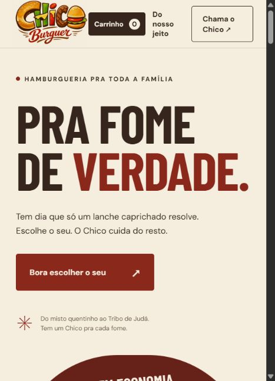
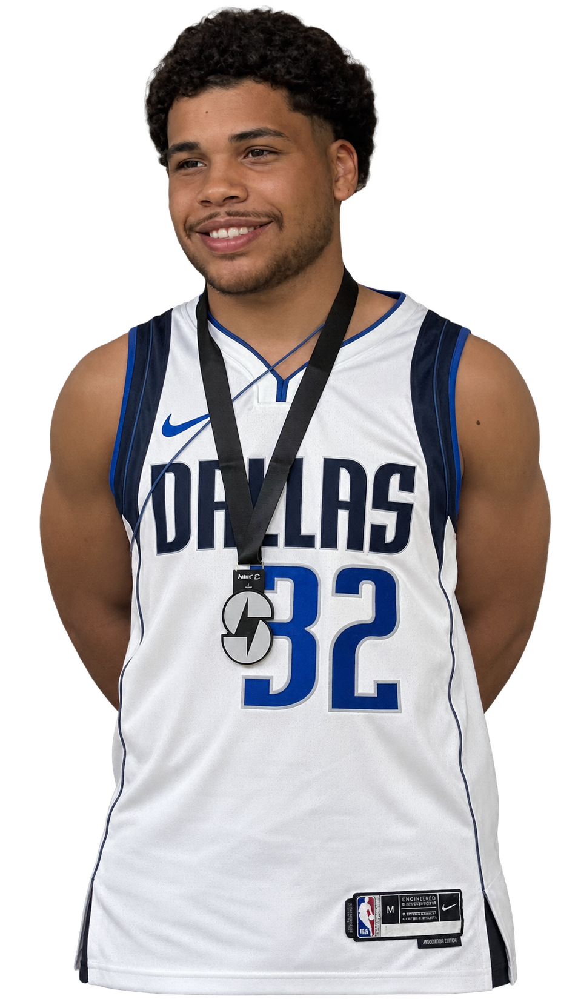
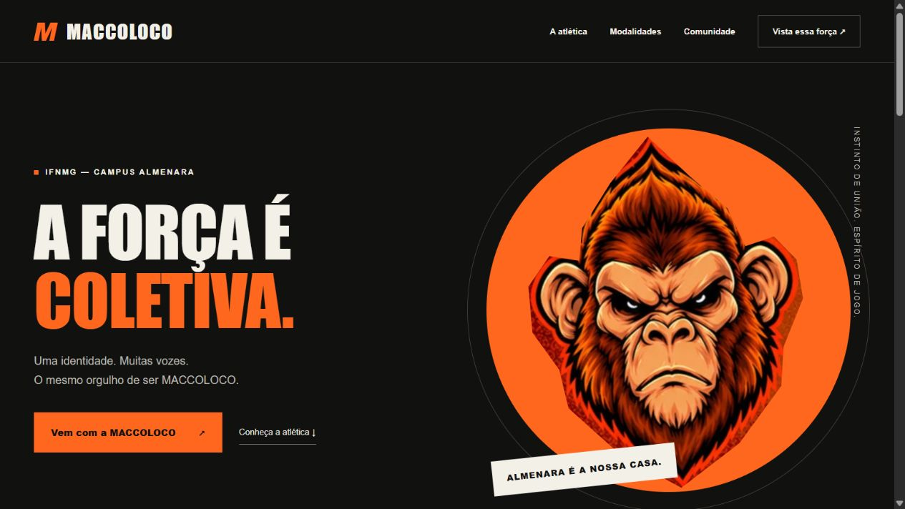

01 / WEB & COMÉRCIO↗

CARDÁPIO DIGITAL & PEDIDOS
Chico Burguer
Da identidade da hamburgueria à experiência de escolher um lanche. Um projeto que conecta apresentação, cardápio e fluxo de pedidos.
Sou desenvolvedor full stack. Conecto interfaces, lógica e dados para transformar ideias em experiências digitais que fazem sentido.
Explore meus projetos ↘
DESENVOLVEDORO problema, minhas decisões
e o caminho até a entrega.

Da identidade da hamburgueria à experiência de escolher um lanche. Um projeto que conecta apresentação, cardápio e fluxo de pedidos.
Uma jornada de agendamento para o cliente e uma agenda organizada para o dono. Interface mobile e regras de negócio pensadas juntas.

Um ponto de encontro digital para apresentar a atlética, sua identidade e suas propostas à comunidade acadêmica.
Curiosidade para entender.
Código para construir.
Tenho 21 anos e curso Análise e Desenvolvimento de Sistemas no Instituto Federal do Norte de Minas Gerais, campus Almenara.
Estou construindo minha trajetória como desenvolvedor full stack, colocando em prática o que aprendo em projetos web e mobile. Gosto de acompanhar o caminho completo: entender uma necessidade, desenhar a experiência, organizar os dados e desenvolver a solução.
IFNMG · Campus Almenara
HTML, CSS, JavaScript, TypeScript e React. Estrutura, responsividade e interação para a experiência no navegador.
SQL, PostgreSQL, Supabase e APIs. Regras de negócio, autenticação, persistência e controle de acesso.
React Native e Expo para mobile. Git e GitHub para versionamento, organização e evolução do código.
Conheça meu código e acompanhe minha trajetória profissional.